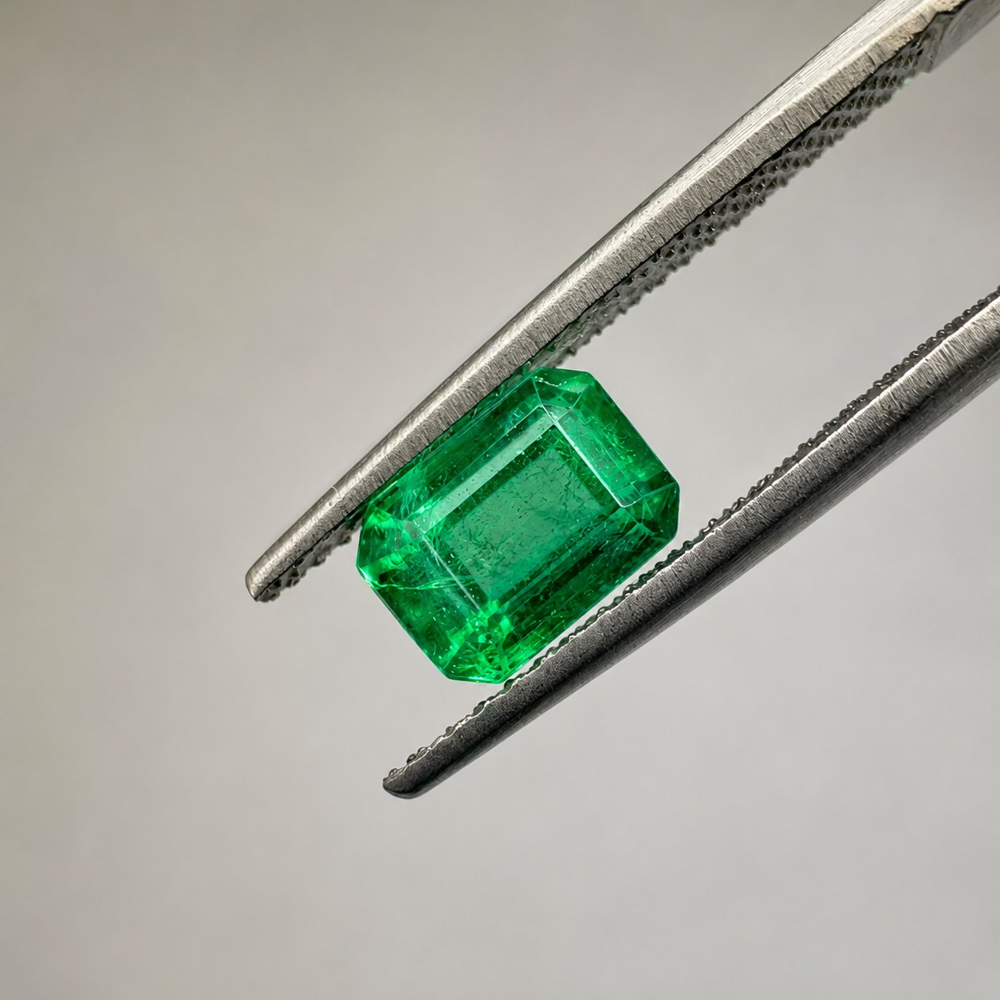

Guide des émeraudes naturelles
Émeraude de Swat au Pakistan : origine, qualité et certification
Les émeraudes de la vallée de Swat sont recherchées pour leur couleur verte, leur caractère naturel et leur origine singulière. Ce guide présente les critères utiles pour comprendre une pierre de Swat et examiner son dossier gemmologique avant une acquisition.

Où se trouve la vallée de Swat ?
La vallée de Swat se situe dans la province de Khyber Pakhtunkhwa, au nord du Pakistan. Cette région montagneuse est connue dans le commerce des gemmes pour ses gisements d’émeraudes. Sur une fiche de pierre, l’origine peut apparaître sous les mentions « Pakistan », « Swat » ou « vallée de Swat ». Une origine déclarée doit toujours être distinguée d’une origine déterminée ou confirmée par un laboratoire.
Qu’est-ce qui caractérise une émeraude de Swat ?
Une émeraude est une variété verte du béryl. Chaque pierre possède une combinaison particulière de couleur, de transparence et d’inclusions naturelles. Les émeraudes de Swat peuvent présenter un vert vif à soutenu et un aspect lumineux, mais aucune origine ne garantit à elle seule un niveau de qualité. Deux pierres issues d’une même région peuvent avoir une valeur très différente.
Les quatre critères à examiner
- Couleur : observez la teinte, la saturation, l’homogénéité et le comportement du vert sous différentes lumières.
- Pureté : les inclusions sont courantes dans l’émeraude. Leur position et leur impact sur la transparence ou la solidité importent davantage que leur simple présence.
- Taille : une taille équilibrée cherche à préserver la matière tout en valorisant la couleur et la lumière. L’Emerald Cut est fréquente pour cette gemme.
- Poids : le carat mesure le poids, pas la qualité. Il doit être étudié avec les dimensions, les proportions et l’ensemble des autres critères.
Traitements et transparence
Le remplissage des fissures par une huile ou une substance similaire est une pratique courante pour les émeraudes. Le type et le degré de traitement peuvent influencer l’aspect, l’entretien et la valeur de la pierre. Une présentation transparente doit reprendre les observations du rapport disponible sans transformer une hypothèse commerciale en certitude gemmologique.
Pourquoi demander un rapport de laboratoire ?
Un rapport gemmologique indépendant aide à confirmer la nature de la gemme et à documenter les caractéristiques observées, notamment les traitements lorsqu’ils sont analysés. Il convient de vérifier le nom du laboratoire, la référence du rapport, les dimensions, le poids et la concordance entre le document et la pierre présentée.
Comment choisir une émeraude naturelle de Swat ?
Commencez par définir l’usage envisagé : collection, projet de joaillerie ou recherche d’une pierre particulière. Comparez ensuite les pierres à partir de photographies cohérentes, de vidéos, de leurs dimensions exactes et du rapport disponible. La meilleure pierre n’est pas nécessairement la plus lourde ou la plus pure : c’est celle dont la couleur, les proportions, le caractère et le dossier correspondent à vos critères.
Découvrir les émeraudes disponibles
Ouest Gems Export présente des pierres naturelles sélectionnées au Pakistan et documentées individuellement. Consultez notre collection d’émeraudes naturelles de Swat, puis demandez le dossier complet de la référence qui retient votre attention.